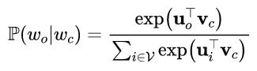
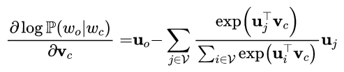
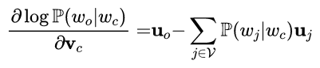
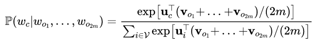
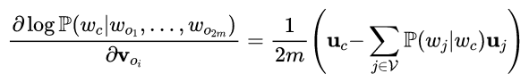

自然语言是一套用来表达含义的复杂系统。在这套系统中，词是表义的基本单元。那么，我们在机器学习或是深度学习中，用什么来表示一个词呢？没错，就是词向量。顾名思义，词向量是用来表示词的向量，通常也被认为是词的特征向量。近年来，词向量已逐渐成为自然语言处理的基础知识。
被抛弃的one-hot向量
one-hot含义
我们有时候会在循环神经网络中使用one-hot向量来表示词，它通常也叫单热向量。假设词典中不同词的数量为N，每个词可以和从0到N-1的连续整数一一对应。假设一个词的相应整数表示为i，为了得到该词的one-hot向量表示，我们创建一个全为0的长为N的向量，并将其第i位设成1。
one-hot的局限性
然而，使用one-hot词向量并不是一个好选择。一个重要的原因就是，one-hot词向量无法表达不同词之间的相似度。例如，任何一对词的one-hot向量的余弦相似度都为0。比如我们通过余弦相似度进行度量：
$$
\frac{\boldsymbol{x}^{\top} \boldsymbol{y}}{|\boldsymbol{x}||\boldsymbol{y}|} \in[-1,1]
$$
对于向量$\boldsymbol{x}, \boldsymbol{y} \in \mathbb{R}^{d}$它们的余弦相似度是它们之间夹角的余弦值，而在one-hot中，上式总等于0。
因此，自从Word2Vec出世后，它很快就退出了历史舞台。
Word2Vec简介
2013年，Google团队发表了word2vec工具，Word2Vec工具主要包括两个模型：skip-gram（跳字模型）和连续词袋模型（continues bag of words，即CBOW）,以及两种高效训练的方法：负采样（negative sampling）和 层序softmax（hierarchical softmax）。其中最大的亮点就在于，word2vec词向量可以较好地表达不同词之间的相似和类比关系。
word2vec自提出后被广泛应用在自然语言处理任务中。它的模型和训练方法也启发了很多后续的词向量模型。
需要注意的是，word2vec并不是一个模型，而是一个工具，它包含两个模型，即：
skip-gram：通过中心词来推断上下文一定窗口内的单词。
CBOW：通过上下文来推断中心词。
Word2Vec模型（mode）
skip-gram（跳字模型）
在skip-gram中，我们用一个词来预测它在文本序列周围的词。例如，给定文本序列”the” “man” “loves” “his” “wife”，skip-gram模型所关心的是，给定”loves”，生成它邻近词”the”,”man”,”his”和”wife”的概率。在这个例子中，”loves”就叫中心词，”the”,”man”.”his”和”son”叫作背景词，当然此时的skip_window（时间窗口）我们设置的是为2。
我们来描述一下skip-gram模型。
假设词典大小为|V|,我们将词典中的每个词与从0到|V|-1的整数一一对应:词典索引集V={0,1,,,|V|-1}。一个词在该词典中所对应的整数称为词的索引。给定一个长度为T的文本序列中,t时刻的词为$w^{(t)}$。当时间窗口大小为m时,跳字模型需要最大化给定任一中心词生成背景词的概率（注意：他们相互独立的）:
$$
\prod_{t=1}^{T} \prod_{-m \leq j \leq m, j \neq 0} \mathbb{P}\left(w^{(t+j)} | w^{(t)}\right)
$$
上式的最大似然估计与最小化以下损失函数等价，所以我们求上式的最大似然估计值，化简一步：
$$
-\frac{1}{T} \sum_{t=1}^{T} \sum_{-m \leq j \leq m, j \neq 0} \log \mathbb{P}\left(w^{(t+j)} | w^{(t)}\right)
$$
其中：

之后，求偏导，即梯度下降：

最终可得：

通过上面计算得到梯度后,我们可以使用随机梯度下降来不断迭代模型参数$v_{c}$。其他模型参数$u_{0}$的迭代方式同理可得。最终,对于词典中的任一索引为i的词,我们均得到该词作为中心词和背景词的两组词向量$v_{i}$和$u_{i}$。也就是说，v w u这几个参数，都是要根据数据输入“学习”出来的。在自然语言处理应用中，一般使用跳字模型的中心词向量作为词的表征向量。
CBOW（连续词袋模型）
连续词袋模型与跳字模型类似。与跳字模型最大的不同是,连续词袋模型中用一个中心词在文本序列周围的词来预测该中心词。例如,给定文本序列”the”,”man”,”loves”,”his”,和”wife”,连续词袋模型所关心的是,邻近词”the”,”man”,”his”,和”wife”一起生成中心词”loves”的概率。
假设词典大小为|V|,我们将词典中的每个词与从0到|V|-1的整数一一对应:词典索引集V={0,1,…,|V|-1}。一个词在该词典中所对应的整数称为词的索引。给定一个长度为T的文本序列中,t时刻的词为$w^{(t)}$。当时间窗口大小为m时,连续词袋模型需要最大化由背景词生成任一中心词的概率:
$$
\prod_{t=1}^{T} \mathbb{P}\left(w^{(t)} | w^{(t-m)}, \ldots, w^{(t-1)}, w^{(t+1)}, \ldots, w^{(t+m)}\right)
$$
上式的最大似然估计与最小化以下损失函数等价，所以我们求上式的最大似然估计值，化简一步：
$$
-\sum_{t=1}^{T} \log \mathbb{P}\left(w^{(t)} | w^{(t-m)}, \ldots, w^{(t-1)}, w^{(t+1)}, \ldots, w^{(t+m)}\right)
$$
它的概率较为复杂一些：

中间化简之后，最终的公式为：

u是变量。实际上，u，v的偏导都要求，步骤相同，这里就不在给出公式。同跳字模型不一样的一点在于，我们一般使用连续词袋模型的背景词向量作为词的表征向量。
容易看出，CBOW和skip-gram的计算开销非常大，所以下面我就介绍在实际训练中如何解决这个计算开销过大的问题。